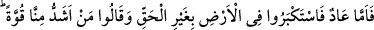
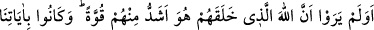
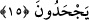

“Ben sizi Âd ve Semûd kavimlerini bir çarpışta helâk eden azâba benzer korkunç
bir azâba karşı îkaz etmiş olayım da!” 13. âyeti okuyunca, Utbe, “Allah aşkına sus!”
diyerek Hz. Peygamberin ağzını kapatmış. Yani Utbe Allah’ın kelâmını işitince öyle bir
hayret ve şaşkınlığa uğramış ki söyleyecek bir söz bulamamış. Sonunda elini Allah
Rasûlü’nün (s.a.) ağzına götürüp “Merhamet sahibinin hakkı için daha fazla okuma,
takatim kesildi, bu sözle şaşkına dönüp kendimden geçtim” demiş.
Ne yapacağını bilmez bir halde âilesine dönüp kendisinden haber bekleyen Kureyş
reislerinin yanına gitmemişti; uzunca bir süre dışarıya çıkmayınca, Kureyşliler “Öyle
görünüyor ki Utbe de sapıttı”; yani ‘Muhammed’in dînine yöneldi ve Sâbiî oldu.’
diyerek evine gittiler ve ‘Ey Utbe! Seni bizim yanımıza gelmekten alıkoyan
Muhammed’in dînine girmiş olmandan başka bir şey değil, herhalde’ dediler. Bunu
duyan Utbe kızıp köpürdü ve ‘Vallahi kendisiyle konuştum; bana öyle şeyler söyledi ki
Allah’a and vererek söylüyorum ne şiir ne kehânet ve ne de sihirdi. En son “Ben sizi
Âd ve Semûd kavimlerini bir çarpışta helâk eden azâba benzer korkunç bir azâba
karşı ikaz etmiş olayım da!” deyince, ‘akrabalık bağlarımız yüzü suyu hürmetine sus’
diyerek elimle ağzını kapattım. Biliyorsunuz, Muhammed bir şey söylediğinde ağzından
hiç yalan çıkmamıştır; ben de başımıza azap gelir diye korktum. Bana göre bu adamı
rahat bırakın ve dînine saldırmayın. Eğer Araplar ona üstün gelirse sizin işinizi de
bitirirler. Fakat o Arapları yenerse mülkü sizin mülkünüz, şerefi sizin şerefinizdir. “Ebû
Cehil: “Anlıyorum ki onun sihri seni de etkisi altına almış, seni de kendinden geçirmiş”
dedi. Utbe “Benim görüşüm budur, her ne istiyorsanız onu yapın” dedi.
Buna rağmen, inatla inkâr ettiler ve çoğu Bedir savaşında katledildi. Allah dînini
gâlip kılarak nûrunu tamamlamaktan başka bir seçeneğe râzı olmadı. Onların değil,
Allah’ın dediği oldu.
15. Âd kavmine gelince, yeryüzünde haksız yere büyüklük tasladılar ve: Bizden
daha kuvvetli kim var? dediler. Onlar kendilerini yaratan Allah’ın, onlardan daha
kuvvetli olduğunu görmediler mi? Onlar bizim âyetlerimizi (mûcizelerimizi) inkâr
ediyorlardı.
“Âd kavmine gelince,” Bu âyetle başlayacak olan tafsîlât yukarıdaki özetten ileri
geldiği için cümlenin başına fâ-i sebebiyyet getirdi. Yani söz konusu Âd’lılara gelince,
“yeryüzünde haksız yere” Yemen’de bulunan kum tepelerinde (ahkàf) “büyüklük
tasladılar”; yani oranın ahâlîsine karşı azamet ve büyüklük taslayıp nefislerinin gücüne